O app
O São João de Campina Grande dura o mês de junho inteiro e tem vários palcos. Em 2024 o evento teve um site com as informações básicas. Para 2025 desenhei um app com a programação dia a dia, uma página para cada atração, o mapa do evento com hotéis, restaurantes e bares por perto, missões com conquistas, notícias e patrocinadores.
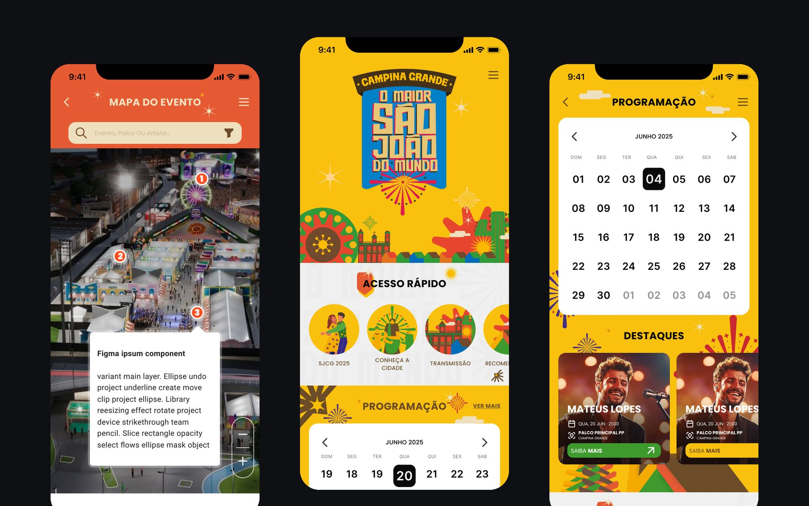
Wireframe
A home, as notícias, os parceiros e o cadastro têm uma versão em wireframe cinza, sem a identidade do evento.
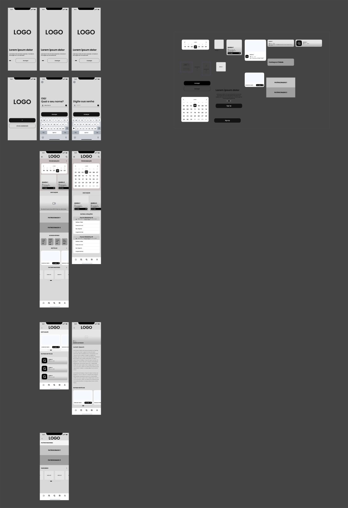
Home
A home abre com o selo do evento e um acesso rápido para programação do SJCG 2025, conheça a cidade e transmissão. Depois vêm o calendário, os destaques do dia, notícias e patrocinadores. Role dentro do quadro.
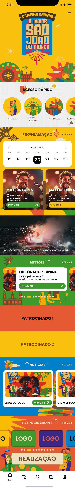
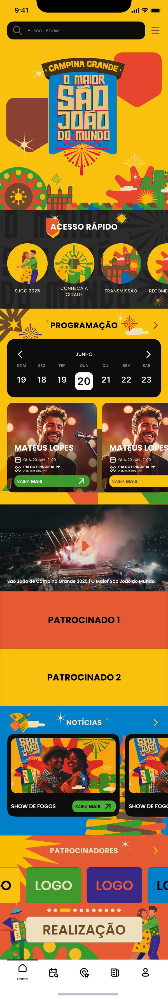
Tema claro e escuro.
Programação e atrações
A programação é um calendário de junho. Ao escolher o dia aparecem os destaques e a lista de atrações separada por palco. Cada atração tem data, hora, palco e sugestões de outras atrações.
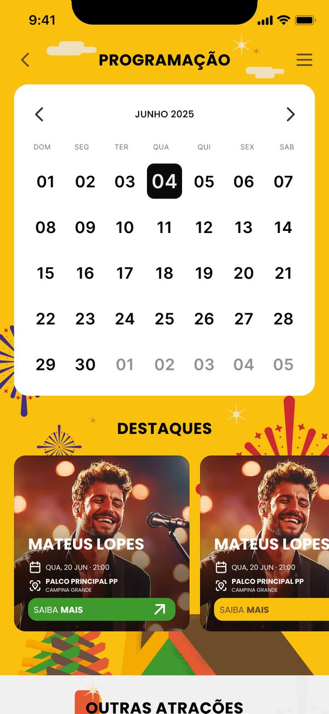
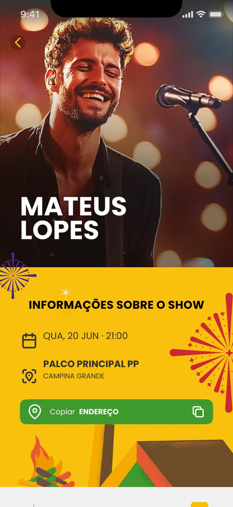
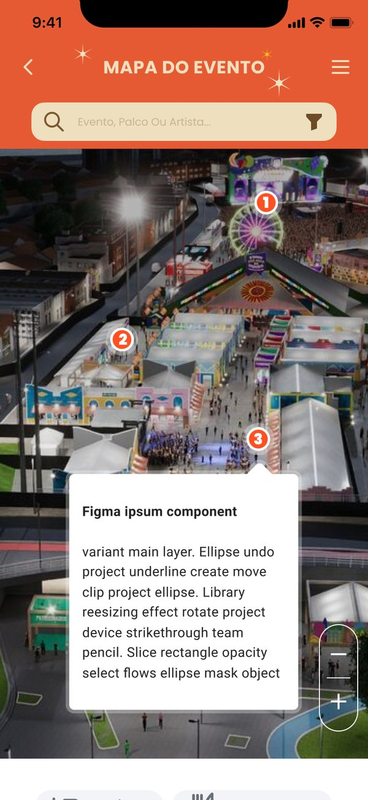
Missões
A parte de jogo. Na missão "Explorador Junino", a pessoa visita pelo menos três locais indicados no mapa, tira uma foto e ganha um selo no perfil. As conquistas ficam numa grade, com as bloqueadas em cinza.
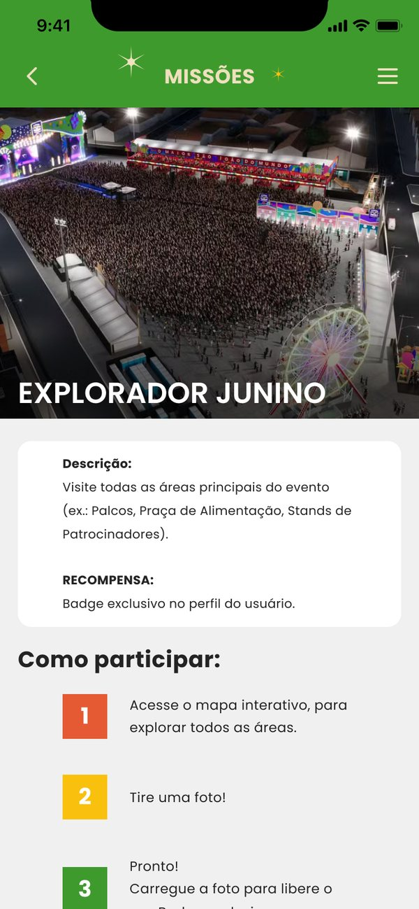
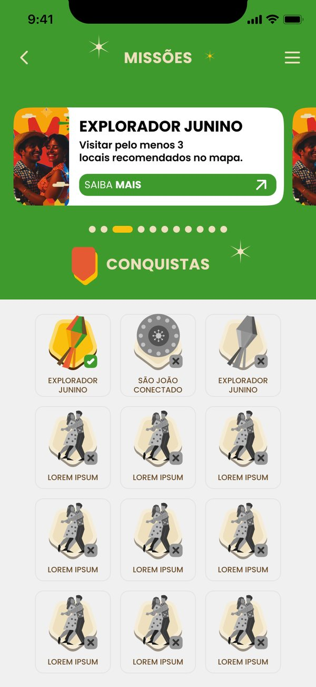
Outras telas
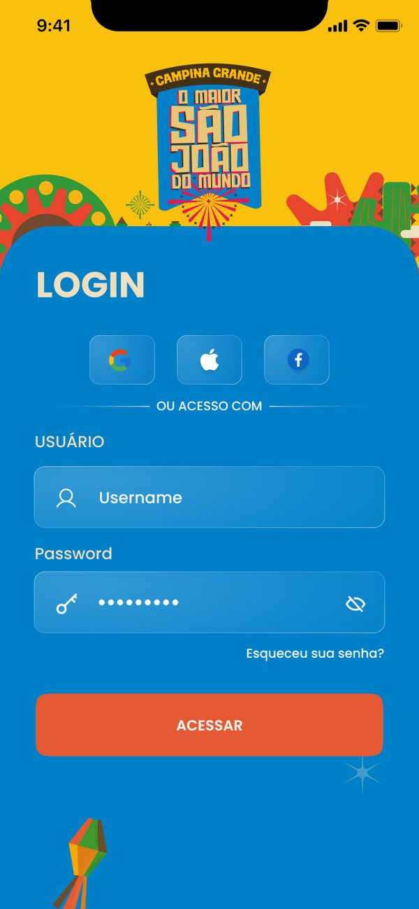
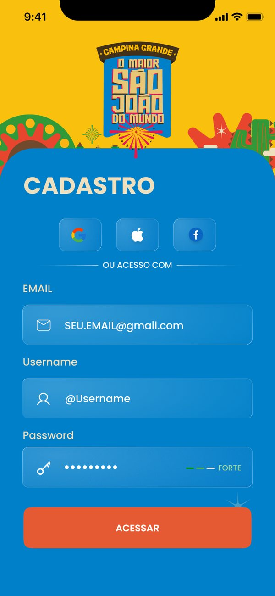
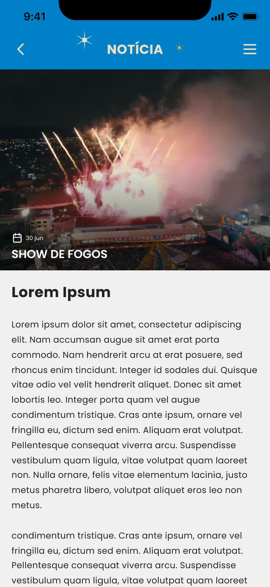
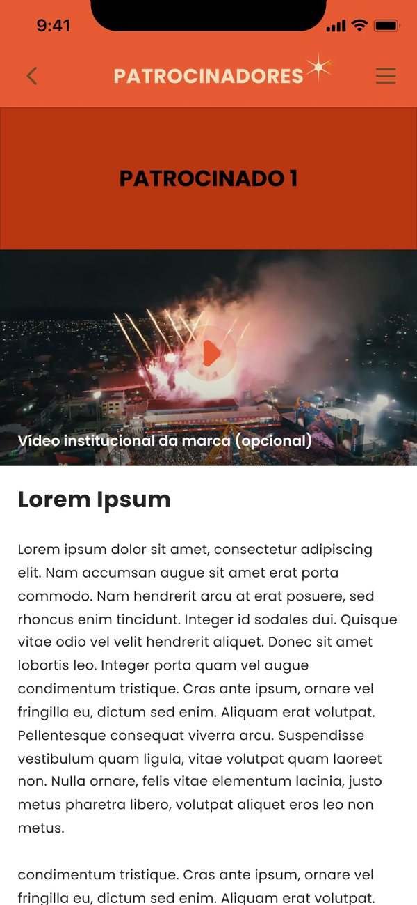
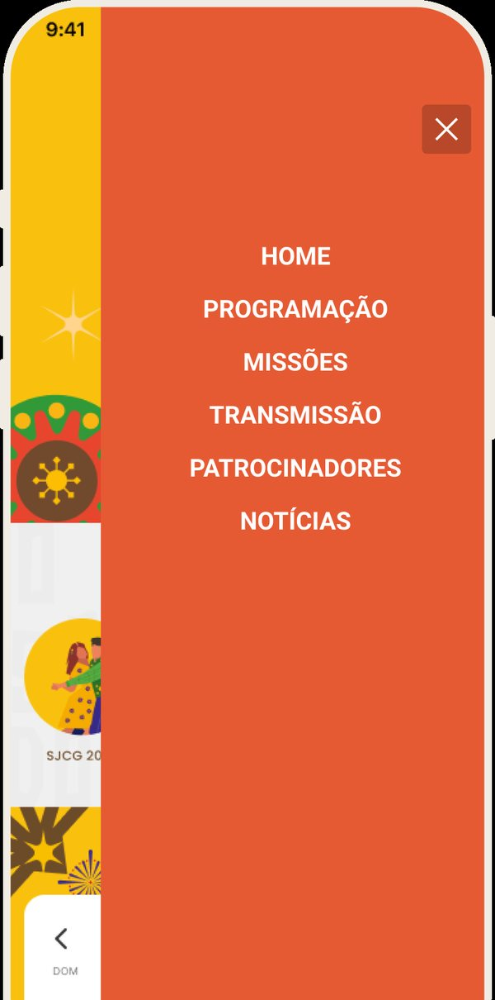